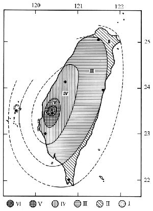

1906年，梅山地區的平靜被一場驚天動地的大地震打破。這場震災不僅是自然力量的震撼，更是一段人類與土地互動的沉痛記憶。
清晨 6 點 43 分，大地劇烈顫抖，山崩地裂的場景彷彿末日降臨。房屋倒塌、河川改道，數千條生命在短短幾分鐘內化為塵埃。這場災難深刻改變了台灣的地貌，也開啟了後世對地質研究與防災措施的新頁。
地震基本資訊
震央時間
1906年3月17日
震央位置
嘉義梅山鄉
地震規模
7.1 Richter
主震能量
極淺層地震

歷史文獻中的餘震紀錄
透過當時文人《水竹居主人日記》的記載，我們能感受到餘震帶來的集體恐慌：
「陰晴天，往墩，到役場持印鑑紙。午後一時餘地又震，適代家長材書香火，書完，又往墩。」（4月7日）
「午前三時十五分，地頗強震...在家代劉才兄書其子樹火過房字...六時餘回家栽菊花，六時餘仝家頭叔，在劉才兄饗晚。」（4月14日）
日記中輕描淡寫的描述背後，其實隱藏著對大地不安穩的無奈與適應。
災情慘重的原因分析
為何此震災損失如此慘重？除了規模強大外，更與當時的社會背景息息相關：
- 發生時間： 06:43，人民多半在室內熟睡或烹飪，猝不及防。
- 建築結構： 盛行「土角厝」，結構不耐震，倒塌時壓死傷人數眾多。
- 社會風俗： 纏足女性因行動受限，在避難時遠比男性緩慢。
1906年4月12日《日日新報》也對此現象留下了深刻的註解：
「女子之死傷實占多數...竟纏其足為自由之束縛，致遭災難之際，不能敏活驅避。」